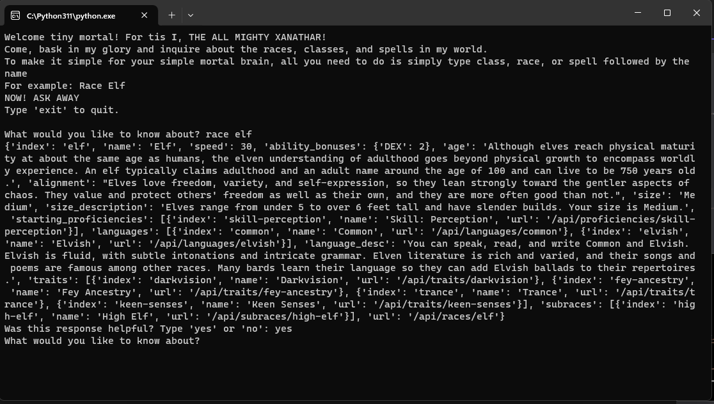
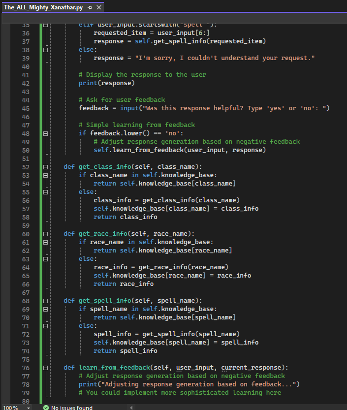
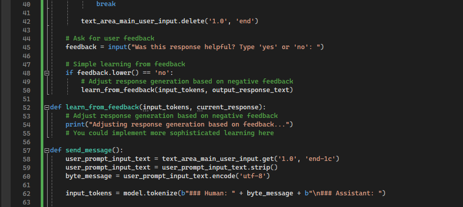

Objective Four
Demonstrate new and original data in deep learning by consuming big data with original algorithms.
The All Mighty Xanathar
A chatbot linked to the DnD5e API
The Xanathar Chatbot is a conversational agent designed to provide information about Dungeons & Dragons (D&D) 5th Edition. It allows users to inquire about classes, races, and spells in the D&D world. The chatbot fetches data from the D&D 5e API, presenting it in an engaging manner. Users input queries, and the chatbot responds with relevant information in the tone of the fictional character Xanathar, adding humor and personality to the interaction.The Xanathar Chatbot incorporates a simple learning mechanism. After providing responses, the chatbot solicits user feedback. If the user indicates dissatisfaction, the chatbot can adjust its future responses based on this feedback. While the learning mechanism is basic, it lays the foundation for potential improvements and adaptations to enhance user satisfaction over time.
Figure 1.1 - Showcasing the same Xanathar program running, with additional code added.
Figure 1.2 - This showcaes the simple machine learning idea by way of a feedback mechanism.
Ioun: The Goddess of Knowledge Chatbot
The Ioun Chatbot is a conversational agent leveraging the Llama language model. It provides responses based on user inputs and generates coherent and contextually relevant text. The chatbot interface is implemented using tkinter, allowing users to interact with the model in a graphical user interface. It can be used for a variety of conversational applications and engages users in a natural language dialogue. Similar to the Xanathar Chatbot, the Ioun Chatbot implements a feedback mechanism. After generating responses, the chatbot seeks user feedback. If the user expresses dissatisfaction, the chatbot can potentially adjust its future responses to better align with user expectations. This rudimentary learning mechanism opens the door for future enhancements and improvements to the chatbot's conversational abilities.
Figure 1.3 - This showcases the same simple feedback mechanism used in the Xanathar Chatbot, only with my Local Chatbot, Ioun.